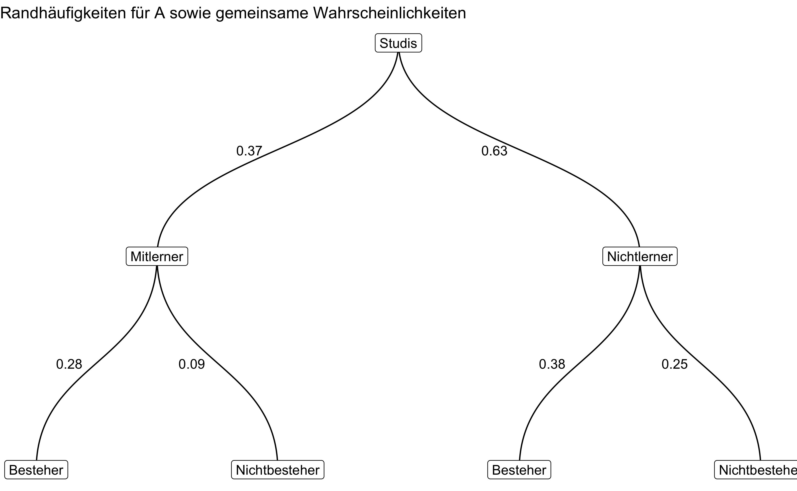
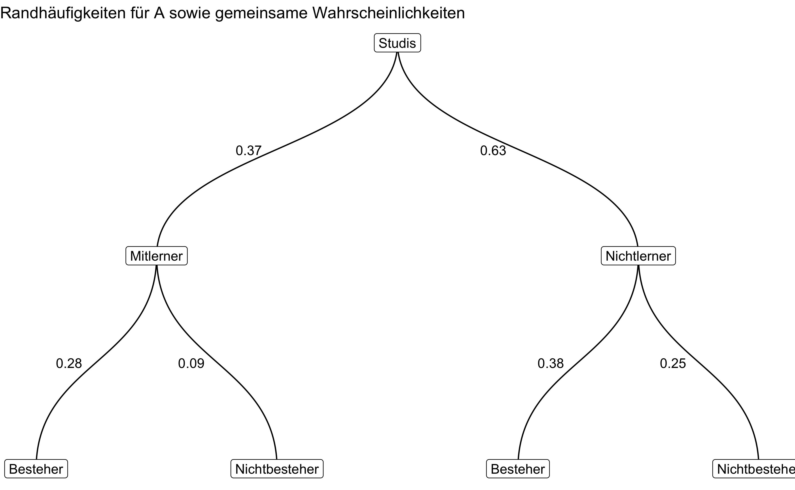
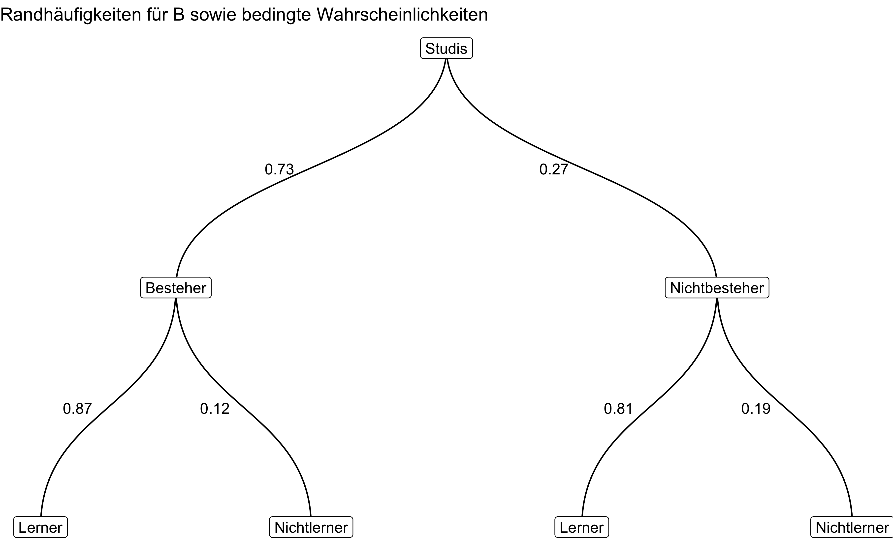

Warning: Using the `size` aesthetic in this geom was deprecated in ggplot2 3.4.0.
ℹ Please use `linewidth` in the `default_aes` field and elsewhere instead.
November 8, 2023
(article?){apter_mass_2010, title = {A mass observation study of student and teacher behaviour in British primary classrooms}, volume = {26}, issn = {0266-7363}, url = {https://doi.org/10.1080/02667361003768518}, doi = {10.1080/02667361003768518}, abstract = {A large scale observational study by educational psychologists of 141 {UK} primary classrooms used a partial interval time‐sampling observational schedule to record the frequency and type of verbal behaviour of teachers and whether students were “on‐task” (following the teacher’s directions) or “off‐task” (not following the teacher’s directions). Results were analysed and comparisons made between lessons that followed National Literacy Strategy or Numeracy guidelines and those that did not; between schools from different geographical contexts, e.g. rural or inner‐city; between classes where there was one, or more than one, adult present; between schools with different percentages of free school meals; and between a.m. and p.m. lessons. A range of findings included higher rates of students being on‐task than found by previous studies, and correlations between high on‐task rates and teachers who used high levels of verbal behaviour including positive academic feedback. Teachers used three times more verbal approval for desired social behaviour in the classroom than has been reported in previous studies. It was found that teachers verbally interacted more with students during National Literacy and Numeracy Strategy lessons but that this did not lead to statistically significantly higher on‐task rate. Similarly, teachers in inner‐city schools interacted more with students, but on‐task rates in inner‐city schools were not significantly higher. Reasons for this effect are discussed.}, pages = {151–171}, number = {2}, journaltitle = {Educational Psychology in Practice}, author = {Apter, Brian and Arnold, Christopher and Swinson, Jeremy}, urldate = {2023-08-30}, date = {2010-06-01}, note = {Publisher: Routledge _eprint: https://doi.org/10.1080/02667361003768518}, keywords = {observational study, off‐task rates, on‐task rates, {UK} primary classrooms}, }
Als Bildungsforscher(in) untersuchen Sie den Lernerfolg in einem Statistikkurs.
Eine Gruppe von Studierenden absolviert einen Statistikkurs. Ein Teil lernt gut mit (Ereignis \(A\)), ein Teil nicht (Ereignis \(A^C\)). Ein Teil besteht die Prüfung (Ereignis \(B\)); ein Teil nicht (\(B^C\)).
(Eselsbrücke: Das Ereignis “A” steht für “Ah, hat Aufgepasst.)
Hinweis: Das Gegenereignis zum Ereignis \(A\) wird oft das Komplementärereignis oder kurz Komplement von \(A\) genannt und mit \(A^C\) bezeichnet.
Wir ziehen zufällig eine/n Studierende/n: Siehe da – Die Person hat bestanden. Yeah!
Aufgabe: Gesucht ist die Wahrscheinlichkeit, dass diese Person gut mitgelernt hat, gegeben der Tatsache, dass dieser Person bestanden hat.
Die Anteile der Gruppen (bzw. Wahrscheinlichkeit des Ereignisses) lassen sich unten stehender Tabelle entnehmen.
| row_ids | B | Bneg |
|---|---|---|
| A | 0.28 | 0.09 |
| Aneg | 0.38 | 0.25 |
Hinweise:
0.42 an (mit führender Null und Dezimalzeichen).
Warning: Using the `size` aesthetic in this geom was deprecated in ggplot2 3.4.0.
ℹ Please use `linewidth` in the `default_aes` field and elsewhere instead.

0.43
\(Pr(A) = 0.37\).
\(Pr(B) = 0.6612\).
\(Pr(AB) = 0.2812\).
\(Pr(A|B)= 0.43\).
\(Pr(\neg A|B) = 0.58\).
\(Pr(A|\neg B) = 0.26\).
\(Pr(\neg A|\neg B) = 0.74\).
Categories:
---
exname: Bed-Wskt2
extype: num
exsolution: r sol
expoints: 1
extol: 0.02
categories:
- probability
- bayes
- num
- qm2
- qm2-pruefung
date: '2023-11-08'
slug: Bed-Wskt2
title: Bed-Wskt2
---
@article{apter_mass_2010,
title = {A mass observation study of student and teacher behaviour in British primary classrooms},
volume = {26},
issn = {0266-7363},
url = {https://doi.org/10.1080/02667361003768518},
doi = {10.1080/02667361003768518},
abstract = {A large scale observational study by educational psychologists of 141 {UK} primary classrooms used a partial interval time‐sampling observational schedule to record the frequency and type of verbal behaviour of teachers and whether students were “on‐task” (following the teacher’s directions) or “off‐task” (not following the teacher’s directions). Results were analysed and comparisons made between lessons that followed National Literacy Strategy or Numeracy guidelines and those that did not; between schools from different geographical contexts, e.g. rural or inner‐city; between classes where there was one, or more than one, adult present; between schools with different percentages of free school meals; and between a.m. and p.m. lessons. A range of findings included higher rates of students being on‐task than found by previous studies, and correlations between high on‐task rates and teachers who used high levels of verbal behaviour including positive academic feedback. Teachers used three times more verbal approval for desired social behaviour in the classroom than has been reported in previous studies. It was found that teachers verbally interacted more with students during National Literacy and Numeracy Strategy lessons but that this did not lead to statistically significantly higher on‐task rate. Similarly, teachers in inner‐city schools interacted more with students, but on‐task rates in inner‐city schools were not significantly higher. Reasons for this effect are discussed.},
pages = {151--171},
number = {2},
journaltitle = {Educational Psychology in Practice},
author = {Apter, Brian and Arnold, Christopher and Swinson, Jeremy},
urldate = {2023-08-30},
date = {2010-06-01},
note = {Publisher: Routledge
\_eprint: https://doi.org/10.1080/02667361003768518},
keywords = {observational study, off‐task rates, on‐task rates, {UK} primary classrooms},
}
```{r libs, include = FALSE}
library(tidyverse)
library(glue)
library(testthat)
library(ggraph)
library(igraph)
library(gt)
```
```{r global-knitr-options, include=FALSE}
knitr::opts_chunk$set(fig.pos = 'H',
fig.asp = 0.618,
fig.width = 9,
fig.cap = "",
fig.path = "",
echo = FALSE,
message = FALSE,
fig.show = "hold",
out.width = "50%",
dpi = 200)
```
# Aufgabe
Als Bildungsforscher(in) untersuchen Sie den Lernerfolg in einem Statistikkurs.
```{r defs}
# rbeta(10, 6, 2)
A_marg <- rbeta(1, 6, 2) %>% round(2)
Aneg_marg <- 1 - A_marg %>% round(2)
A_distrib <- rbeta(1, 6, 2) %>% round(2)
Aneg_distrib <- rbeta(1, 6, 2) %>% round(2)
AandB <- A_marg * A_distrib %>% round(2)
AandBneg <- A_marg - AandB %>% round(2)
AnegandB <- Aneg_marg * Aneg_distrib %>% round(2)
AnegandBneg <- Aneg_marg - AnegandB %>% round(2)
B_marg <- AandB + AnegandB %>% round(2)
Bneg_marg <- AandBneg + AnegandBneg %>% round(2)
d <- tibble(
row_ids = c("A", "Aneg", "row_sum"),
B = c(AandB, AnegandB, AandB+AnegandB),
Bneg = c(AandBneg, AnegandBneg, AandBneg+AnegandBneg)
) %>%
mutate(col_sum = B + Bneg)
d %>%
filter(row_ids == "row_sum") %>%
select(B, Bneg) %>%
mutate(sum_B_Bneg = sum(B, Bneg)) %>%
pull(sum_B_Bneg) %>%
expect_equal(1, tolerance = .01)
A_cond_B <- AandB / B_marg %>% round(2)
Aneg_cond_B <- AnegandB / B_marg %>% round(2)
A_cond_Bneg <- AandBneg / Bneg_marg %>% round(2)
Aneg_cond_Bneg <- AnegandBneg / Bneg_marg %>% round(2)
```
Eine Gruppe von Studierenden absolviert einen Statistikkurs.
Ein Teil lernt gut mit (Ereignis $A$), ein Teil nicht (Ereignis $A^C$).
Ein Teil besteht die Prüfung (Ereignis $B$); ein Teil nicht ($B^C$).
(Eselsbrücke: Das Ereignis "A" steht für "Ah, hat *A*ufgepasst.)
Hinweis: Das Gegenereignis zum Ereignis $A$ wird oft das Komplementärereignis
oder kurz Komplement von $A$ genannt und mit $A^C$ bezeichnet.
Wir ziehen zufällig eine/n Studierende/n: Siehe da -- Die Person hat bestanden. Yeah!
**Aufgabe**: Gesucht ist die Wahrscheinlichkeit, dass *diese Person* gut mitgelernt hat,
gegeben der Tatsache, dass dieser Person bestanden hat.
Die Anteile der Gruppen (bzw. Wahrscheinlichkeit des Ereignisses) lassen sich unten stehender Tabelle entnehmen.
```{r results = "asis"}
d %>%
select(row_ids, B, Bneg) %>%
filter(row_ids != "row_sum") %>%
mutate(across(c(B, Bneg), \(x) sprintf(x, fmt = "%.2f"))) %>%
gt()
```
*Hinweise*:
- Runden Sie auf 2 Dezimalstellen.
- Geben Sie Anteile stets in der Form `0.42` an (mit führender Null und Dezimalzeichen).
- "Aneg" bezieht sich auf das Komplementärereignis zu A.
- Berücksichtigen Sie die üblichen Hinweise des Datenwerks.
```{r}
items <-
c("Zeichnen Sie (per Hand) ein Baumdiagramm, um die gemeinsamen Wahrscheinlichkeiten darzustellen. Weiterhin sollen die Randwahrscheinlichkeiten für $A$ dargestellt sein.",
"Zeichnen Sie (per Hand) ein Baumdiagramm, um diesen Sachverhalt darzustellen.",
"Geben Sie die Wahrscheinlichkeit des gesuchten Ereignisses an."
)
```
```{r questionlist, echo = FALSE, results = "asis"}
exams::answerlist(items, markup = "markdown")
```
</br>
</br>
</br>
</br>
</br>
</br>
</br>
</br>
</br>
</br>
# Lösung
```{r defs-studis}
edf <- #events data frame
tibble(
from = c("Studis","Studis","Mitlerner",
"Mitlerner","Nichtlerner","Nichtlerner"),
to = c("Mitlerner","Nichtlerner","Besteher",
"Nichtbesteher","Besteher","Nichtbesteher")
)
studi_type <- unique(c("Studis","Studis","Mitlerner",
"Mitlerner","Nichtlerner","Nichtlerner", "Mitlerner","Nichtlerner","Besteher",
"Nichtbesteher","Besteher","Nichtbesteher"))
```
```{r graph1}
studies_props <- round(c(A_marg, 1-A_marg, AandB, AandBneg, AnegandB, AnegandBneg), 2)
studis_graph <-
tibble(
type = unique(c(edf$from, edf$to))
)
studis_graph <- graph_from_data_frame(d = edf, v = studis_graph, directed = TRUE)
#V(studis_graph)$name <- studi_type
E(studis_graph)$studies_props <- studies_props
# as_data_frame(studis_graph, what = "edges")
```
```{r graph2}
studies_prop_cond <- round(c(
B_marg,
1-B_marg,
A_cond_B,
Aneg_cond_B,
A_cond_Bneg,
Aneg_cond_Bneg
),
2
)
edf2 <- tibble(
from = c("Studis", "Studis",
"Besteher", "Besteher",
"Nichtbesteher", "Nichtbesteher"),
to = c("Besteher", "Nichtbesteher",
"Lerner", "Nichtlerner",
"Lerner", "Nichtlerner")
)
studis_graph_v2 <-
tibble(
type = unique(c(edf2$from, edf2$to))
)
studis_graph2 <- graph_from_data_frame(d = edf2, v = studis_graph_v2, directed = TRUE)
E(studis_graph)$studies_props <- studies_props
# as_data_frame(studis_graph, what = "edges")
E(studis_graph2)$studies_prop_cond <- studies_prop_cond
```
```{r}
sol <- vector(mode = "character", length = 4)
```
A)
```{r fig.align='center'}
p1 <- ggraph(studis_graph, layout = 'dendrogram', circular = FALSE) +
geom_edge_diagonal(aes(label = studies_props),
hjust = 1.5) +
geom_node_point() +
geom_node_label(aes(label = name)) +
theme_void() +
labs(title = "Randhäufigkeiten für A sowie gemeinsame Wahrscheinlichkeiten")
p1
```
B)
```{r fig.align='center'}
p2 <- ggraph(studis_graph2, layout = 'dendrogram', circular = FALSE) +
geom_edge_diagonal(aes(label = studies_prop_cond),
hjust = 1.5) +
geom_node_point() +
geom_node_label(aes(label = name)) +
theme_void() +
labs(title = "Randhäufigkeiten für B sowie bedingte Wahrscheinlichkeiten")
p2
```
C)
```{r}
sol <- A_cond_B %>% round(2) %>% as.character()
```
`r sol`
```{r echo = TRUE}
A_cond_B <- (AandB / B_marg) %>% round(2)
Aneg_cond_B <- (AnegandB / B_marg) %>% round(2)
A_cond_Bneg <- (AandBneg / Bneg_marg) %>% round(2)
Aneg_cond_Bneg <- (AnegandBneg / Bneg_marg) %>% round(2)
```
$Pr(A) = `r A_marg`$.
$Pr(B) = `r B_marg`$.
$Pr(AB) = `r AandB`$.
$Pr(A|B)= `r A_cond_B`$.
$Pr(\neg A|B) = `r Aneg_cond_B`$.
$Pr(A|\neg B) = `r A_cond_Bneg`$.
$Pr(\neg A|\neg B) = `r Aneg_cond_Bneg`$.
---
Categories:
- probability
- conditional
- bayes
- num